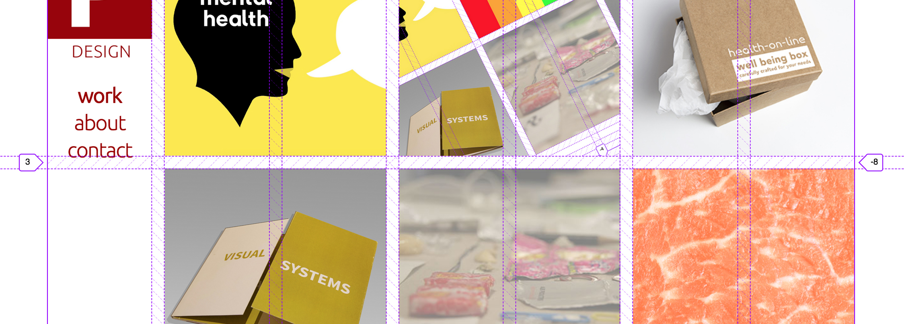
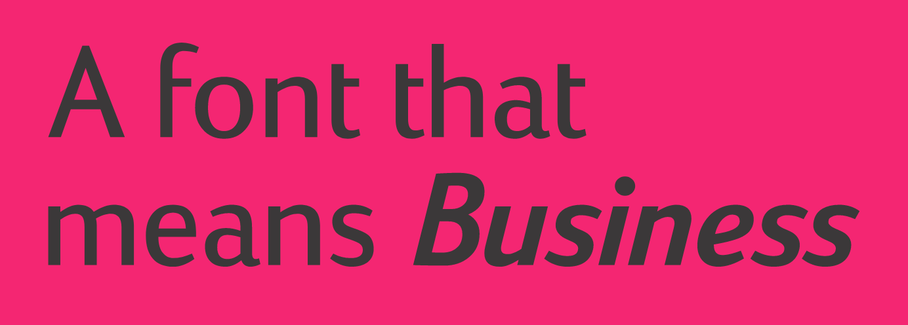
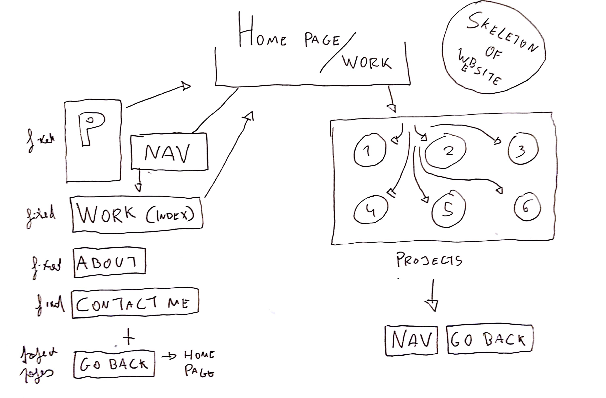

Website development
Website development
Web Design
The development of this website started off with the writing of the About Me page, taking into consideration all the advice we were given. I chose a more formal tone, as I believe it suits the purpose of this piece of work — presenting ourselves to the industry. I chose a colourful portrait of myself, as it, in a way, describes my personality.
I've also developed a provisional logo for myself (see top-right of the website) and I've matched the whole piece to the colours selected.
Then I proceeded to build a grid using CSS, with the tools provided in the workshops. It's a seven-column grid where the first column serves exclusively for navigation.
I've also selected a font that is used fully throughout the website and my logo. This font is Viato, a sans-serif font created by Dalton Maag. I've chosed this because I believe it to suit the general tone of voice of the website and how I'm trying to be perceived.

For the navigation on the website, I've tried to keep it as simple and neat as possible. I've also chose to have my work displayed on the main page, as I'm believer that work just speaks for itself, when it comes to the industry.
On the right, there's a scheme of the website navigation skeleton.
This website is in an early stage. I have outlined a plan on how to develop it further and most of the time spent working on this project was aimed at creating a stable platform that I could work with, in the future. I believe I've managed to achieve that.
